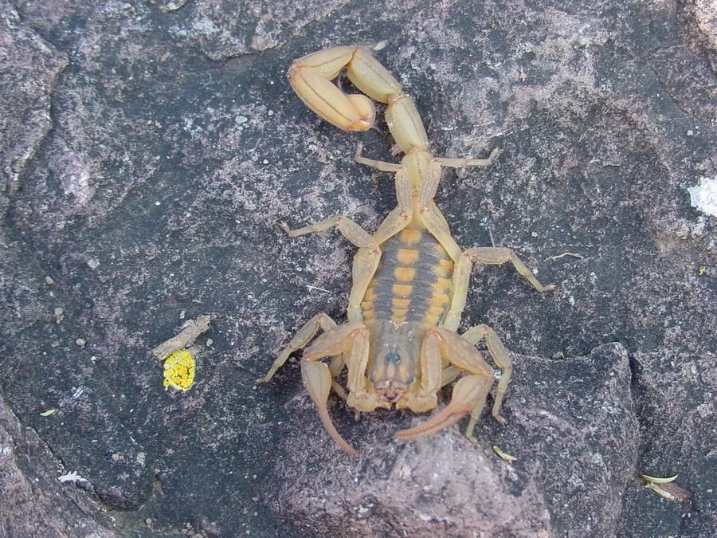

蛛形动物 · 动物界
墨西哥火蝎 Centruroides limpidus

体色浅黄至橙黄的中小型蝎，尾节粗壮、毒性强烈，叮刺可致儿童重症，是墨西哥重要的中毒来源。
- 分类
- 门节肢动物门纲蛛形纲目蝎目科钳蝎科属刺尾蝎属
- 栖息环境
- 干燥灌丛、石堆、土墙缝隙与村落周边
- 地理分布
- 墨西哥中部与南部的干燥地区
- 保护级别
- 常见种，无保护级别；属重要的医学毒蝎
物种志
墨西哥火蝎的体长约五至七厘米，体色浅黄至橙黄，尾部各节带深色环纹，螯肢细长，尾部粗壮。它的双螯相对细小，尾针却很有力，这种形态提示它更依赖毒液而不是蛮力。体表在紫外线下会发出荧光，夜间用紫外灯扫过地面很容易发现它，这也是野外调查常用的方法。
它分布于墨西哥中部的干燥灌丛、石堆和村落周边，白天躲在石块、树皮下和墙缝里，夜间出来捕食昆虫和蛛类。雌蝎产下幼蝎后会把它们背在背上，直到第一次蜕皮才散开。它的毒液含神经毒素，叮刺后局部剧痛，儿童可能出现流涎、抽搐和呼吸窘迫，属于需要立即就医的急症。在分布区，夜间要抖鞋、检查床铺和墙角，避免徒手翻动石块。
形态与习性
- 体长约五至七厘米，浅黄至橙黄
- 形态双螯细小、尾部粗壮，依赖毒液
- 荧光紫外线下全身发荧光，便于夜巡
- 育幼幼蝎孵出后负于雌蝎背上
- 毒性神经毒素，儿童可致重症
- 防范抖鞋、查床铺、不徒手翻石
趣味知识
- 夜里用紫外灯一照，它全身发出荧光，想藏也藏不住。
- 它的螯很小，尾巴却很粗，说明它靠毒液而不是靠夹。
- 儿童被叮后可能出现抽搐和呼吸困难，必须立刻送医。